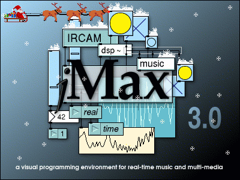

The jMaxProject.pbproj, that you can find in "jmax/macosxbuild/jMaxProject/",
is generated with ProjectBuilder Version 2.0
(April 2002 Developer Tools Beta).
Just build the "all" target in jMaxProject. If build succeeded you will
find jMax.app in "jmax/macosxbuild/jMaxProject/build/".
Now you can move it and install it were you want.
Switch to target "jMax" and click on "build and run active target" button.
